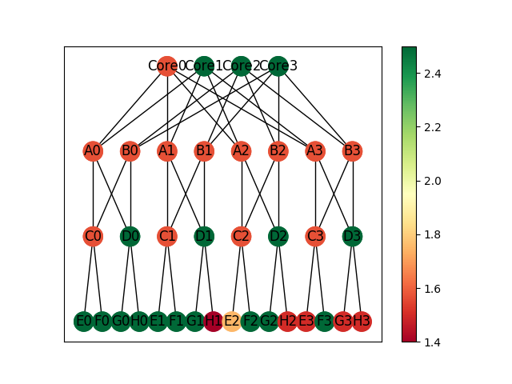

Week of 8/12/19
- Implemented a method which calculates and logs the average sleep state that each of the switches and servers has been in during the experiment
- Integrated the average sleep state value into the topology mapping for a k=4 topology
- Node color is now assigned to each node from the graph’s color map depending on their average sleep state value
- Color scale generated along with the graph to show what values the various colors represent

In Progress
- Building the k=8 topology graph
- Color mapping and sleep state tracking should translate directly once the topology is built and graphed successfully